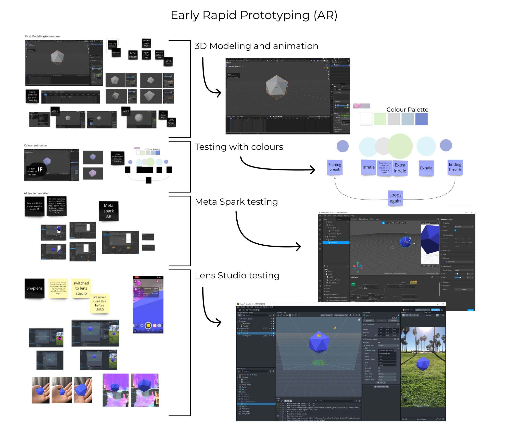

Blog 8 | Rapid Prototyping within the Break
Design 302 | Date: 17/09/24 (Tuesday)
This is a small reflection based on what I had done over the inter-semester break, looking into the starting phase of the ideation phase, focusing on rapid prototyping.
What?
I started to do some early rapid prototyping for my project, focusing on one of my concepts had created previously. The rapid prototyping I had done was looking into 3D modelling and 3D animation within Blender and testing how my idea work within AR.
Figure 1.
Graphic of processes of my first rapid prototype.

Note. Authors processes of what they had done for their prototype, screenshots from Blender, Meta Spark and Lens studio. Graphic made by the author.
References
J, D. (1994). Reflective practice for practise. PubMed, 14(1), 47–50.
https://pubmed.ncbi.nlm.nih.gov/8303152
Meta Spark. (2024, August 27). A Meta Spark Update.
https://spark.meta.com/blog/meta-spark-announcement/#:~:text=Meta%20Spark's%20platform%20of%20third,available%20effective%20January%2014%2C%202025.&text=Following%20a%20thorough%20assessment%2C%20we,Tuesday%2C%20January%2014%2C%202025.
Rolfe, G., Freshwater, D., & Jasper, M. (2001). Critical Reflection for Nursing and the Helping Professions: A User’s Guide. Palgrave MacMillan.
What? So what? Now what? (2020, January 30). The University of Edinburgh.
https://www.ed.ac.uk/reflection/reflectors-toolkit/reflecting-on-experience/what-so-what-now-what